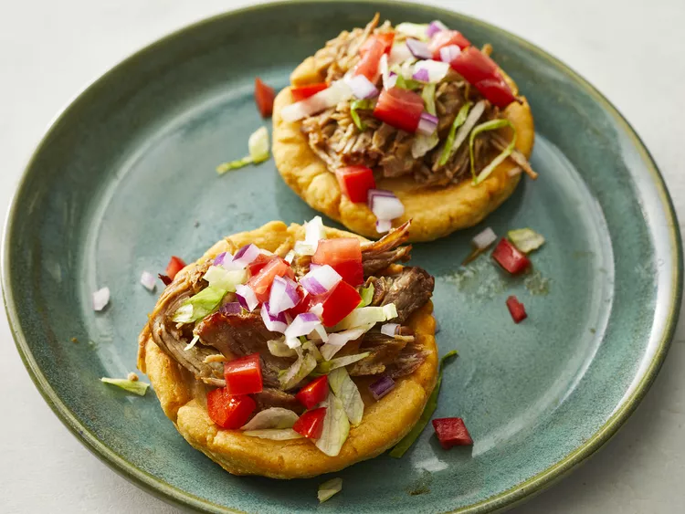

Sopes

Description
Ingredients
- 3 cups of masa harina
- 1 tablespoon salt
- 2 cups warm water, or as needed
- 1 quart oil for frying
Steps
-
Step 1: Whisk masa harina and salt together in a bowl.
Stir in enough water until dough is smooth and holds together.
-
Step 2:Form dough into twelve 2-inch balls. Place balls
onto parchment paper and flatten to 1/2-inch thick circles.
-
Step 3:Heat oil in a deep fryer or large saucepan to
400 degrees F (200 degrees C).
-
Step 4:Working in batches, fry a few sopes at a time
until lightly browned, about 30 seconds per side. Transfer with tongs to
a paper towel-lined plate and let cool just until they can be handled, 2
to 3 minutes. Pinch the edges of each sope together to form a little
boat.
-
Step 5:Return sopes to the hot oil and fry until golden
and cooked through, 1 to 2 more minutes. Drain on paper towels.